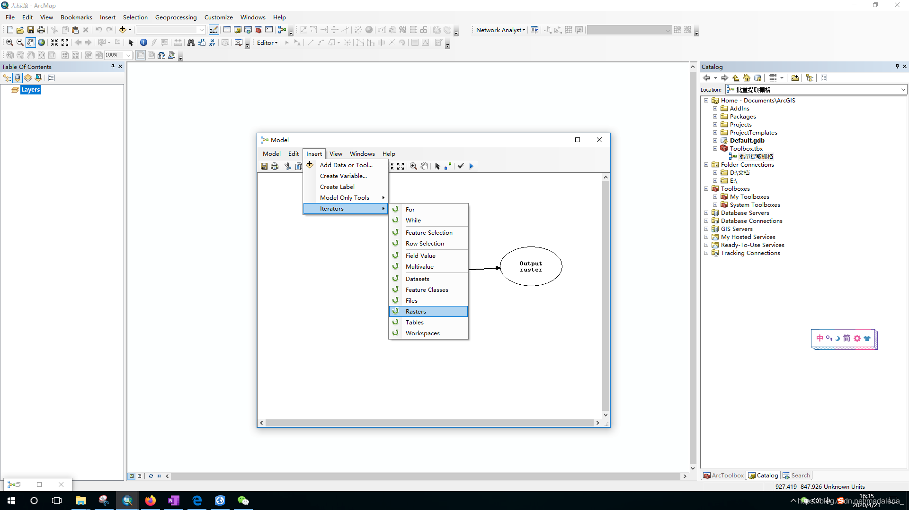

使用模型构建器批量提取栅格
目录
第一步：在工具箱中找到 按掩膜提取（Extract by Mask） 的工具，添加到模型构建器中。
第二步，添加栅格迭代循环。并将迭代栅格的栅格框连接到提取工具上，选择为输入栅格。
点击栅格循环的工作框，勾选循环（recursive） 
第三步，添加参数
1.添加工作空间，此空间为所有待提取栅格所在文件夹。
2.添加字段参数，此参数为循环遍历时，根据该字段对数据进行筛选
3.添加掩膜参数，根据该掩膜确定提取范围